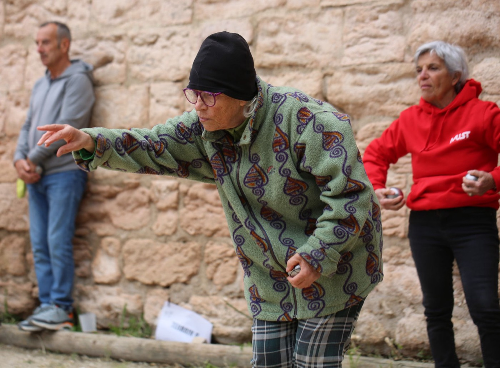

C'est tout le principe de la répartition. Faites défiler les années pour voir comment l'équilibre bouge.
Chaque année les deux barres doivent faire la même longueur. Quand les ressources ne suffisent pas, il faut trouver le reste.
Plus une barre est haute, plus il y a de monde à ce niveau. Le repère noir, c'est vous.
Cotisation par an

Pension par mois
Cotisants#0E7C7B
Impôts et transferts#8FC4C1
Retraités#D9730D
Reste à financer#7A3E6B
Encre#1D1B18
Papier#FAF7F2
Fraunces pour ce qu'on lit en premier
Figtree pour tout le reste : les explications, les légendes, les boutons et les chiffres des tableaux, comme 1 234 567 € ou 54,6 %.